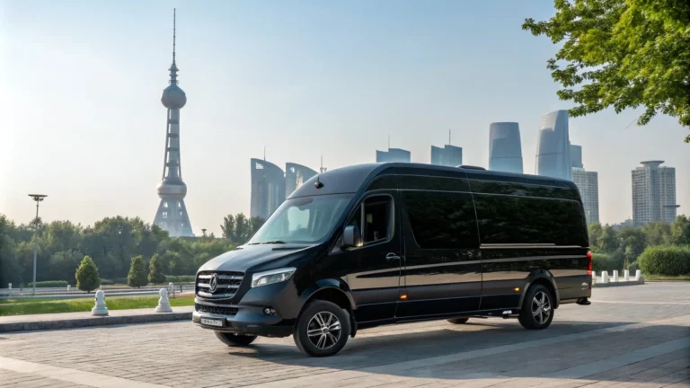

Маршруты по Узбекистану для самостоятельных поездок: готовые треки, время в пути и удобные остановки
Маршруты по Узбекистану — проверенные тайминги, удобные остановки и лайфхаки. Аренда микроавтобуса в Ташкенте для групп и семей.
СтатьяЧитать
Полезные статьи об аренде минивэнов, трансферах, маршрутах по Ташкенту и поездках по Узбекистану.
Маршруты по Узбекистану — проверенные тайминги, удобные остановки и лайфхаки. Аренда микроавтобуса в Ташкенте для групп и семей.

Микроавтобус для туристов — верный спутник для путешествий по Ташкенту и его окрестностям. Поможем сделать путешествие незабываемым!

Микроавтобусы в Ташкенте: аренда для семьи, групп и бизнеса; класс и маршрут по городу, Чимгану и Чарваку, онлайн-бронь и прозрачные условия.

Микроавтобусы в Ташкенте для трансферов: быстро подберём вместимость и багаж, подскажем реальные опции комфорта и формат аренды.

Аренда микроавтобуса посуточно — удобное, доступное решение, которое предлагаем для туристических, корпоративных и частных поездок.

Микроавтобусы с водителем по Ташкенту и за его пределами: встреча в аэропорту, корпоративные маршруты, работаем с гостями из других стран.

Прокат авто в Ташкенте без водителя для самостоятельной поездки: свобода маршрутов и разумная экономия с нашей компанией.

Прокат микроавтобуса в Ташкенте — это не просто удобный способ передвижения, а возможность ощутить весь комфорт и роскошь путешествий.

Цена аренды микроавтобуса в Ташкенте: актуальные тарифы, главные факторы, лайфхаки и как сэкономить. Аренда с водителем, без и с гидом.

Ташкент для туристов — отправная точка увлекательного путешествия по Узбекистану. Величественные мечети, древние города, гостеприимные люди.
Туристические маршруты по Узбекистану привлекают тысячи туристов со всего мира благодаря уникальной истории, культуры и природной красоты.

Трансфер аэропорт Самарканд. Инструкция, как организовать трансфер. Встреча с табличкой, ожидание при задержке рейса, выбор авто под багаж.